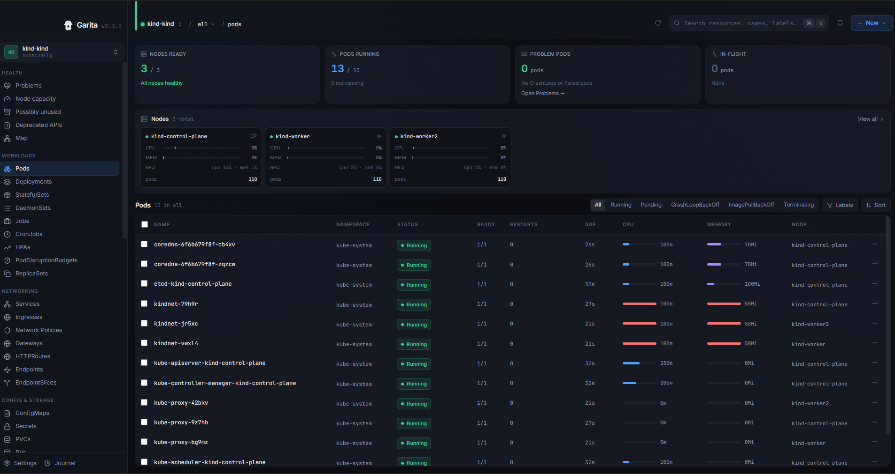

Free and open source · Apache-2.0
Browse, debug and change Kubernetes clusters without leaving one window.
Garita is a desktop client that talks to the Kubernetes API directly. No kubectl binary needed, and your kubeconfig is never rewritten.
Garita is a desktop app. Open this page on a computer to install it.
macOS builds are not notarized: on first launch run xattr -rd com.apple.quarantine /Applications/Garita.app. Windows installers are unsigned, so SmartScreen will warn.

From alert to fix, in one window.
Everything you would otherwise switch between a terminal, a log tailer and a YAML editor to do.
See how it connects
Open a namespace as a graph: owners, Service and Ingress routes, volumes and environment references. Lines run at right angles between the boxes; dashed and dotted lines, not colour, tell the relations apart.
Logs, shells, debug containers
Stream and filter logs across up to 20 pods of a workload. Open a shell in a container, or attach a debug container to an image that has none.
Edit with a preview
Change YAML or Helm values and see a server-side dry run and a diff before anything is written. Guided edit forms and merge-from-file send JSON merge patches, so fields the form does not model are left alone. YAML Save replaces the object after the dry run and diff.
History from your own monitoring
Point a cluster at its Prometheus and Loki or VictoriaLogs services. Garita reads them only through the API server's service proxy: metric charts up to 7 days, log history, and right-sizing hints from the 24 h 95th percentile when the data allows.
Health at a glance
Problems, node capacity, deprecated APIs and possibly unused objects, from fixed rules with the evidence shown. No scores or grades.
Open it from your shell
Jump straight to a context, namespace and kind.
garita --context staging -n web popo, deploy, svc and other kubectl short names work. garita --help lists them.
Also included:
- Helm
- ArgoCD
- Flux
- Who can…
- Action journal
- Network policies (approximation)
- ⌘K palette
Built to avoid surprises
production staging
A colour and label per cluster
So production looks like production. The identity shows in the sidebar, the top bar and every destructive confirmation.
Read-only mode
Turns off the app's write controls for a cluster. Other guardrails ask you to type the cluster label before a write, or cap bulk actions. A guardrail in the app, not a security boundary.
Secrets stay hidden
Secret values stay hidden until you click Reveal, and are never shown in diffs or previews.
What it deliberately does not do
- No
kubectlbinary dependency. - Never writes to your kubeconfig.
- No server-side apply; guided edits and merge-from-file are JSON merge patches.
- No node shell, no privileged pods.
- No in-cluster agent.
- No AI, telemetry, analytics or crash upload.
Garita checks GitHub once a day for a new version and never sends cluster data. You can turn the check off in Settings.
Install
Needs a current system webview: macOS 13.3 or later, Ubuntu 22.04 or later, Fedora/RHEL with current webkit2gtk, Windows 10 or later.
macOS (Apple Silicon)
Download Garita-macOS-arm64.dmg and drag it to Applications. The app is ad-hoc signed, not notarized, so macOS blocks the first launch. Run once:
xattr -rd com.apple.quarantine /Applications/Garita.appOr with Homebrew (the cask does this for you and adds the garita command):
brew tap KANOMNUT/garita https://github.com/KANOMNUT/garitabrew install --cask kanomnut/garita/garita
With the DMG, use Settings → Command line → Install to add the garita command.
Linux (x86_64)
- Debian/Ubuntu:
Garita-linux-amd64.deb - Fedora/RHEL:
Garita-linux-amd64.rpm
The garita command is on your PATH after installing.
Windows (x86_64)
Download Garita-windows-amd64-setup.exe (per user) or Garita-windows-amd64.msi (all users).
Unsigned: Windows SmartScreen will warn. Choose "More info", then "Run anyway".
After installing, open a new terminal window to use the garita command.
Or with Scoop:
scoop install https://kanomnut.github.io/garita/scoop/garita.jsonOnce the garita command is installed, in any terminal:
garita --helpVerify downloads: see SECURITY.md.
Open source
Garita is licensed under Apache-2.0. Report bugs, read the code and send patches on GitHub.
SourceIssuesSecurity advisories
Garita (gah-REE-tah) is the Spanish word for a fortress sentry box.